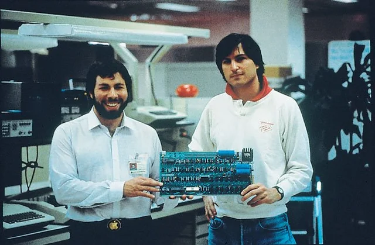

what's old · 工程实践
从基底加速度到楼层响应：20层剪切楼的地震时程分析
以20层线性剪切楼为例，推导一致基底激励方程，使用Newmark法计算地震响应，并通过模态解、动力平衡残差、静态图和动画核对结果。
进入阅读AlpacaNotes · 书评
评论：《黑客与画家》
本文将围绕Paul Graham的《黑客与画家》展开评论，探讨黑客与艺术家的共通之处，以及黑客在工程科学等领域中所面临的现实困境与生存之道。
进入阅读
站点精选
Linguista
所读 · 所思 · 所想
Library
进入 Library
AlpacaNotes
Hinbox
what’s old
科学 · 技术 · 实践
Workshop

项目与实践
Bookmarks
收藏与索引
About
所读 · 所思 · 所想